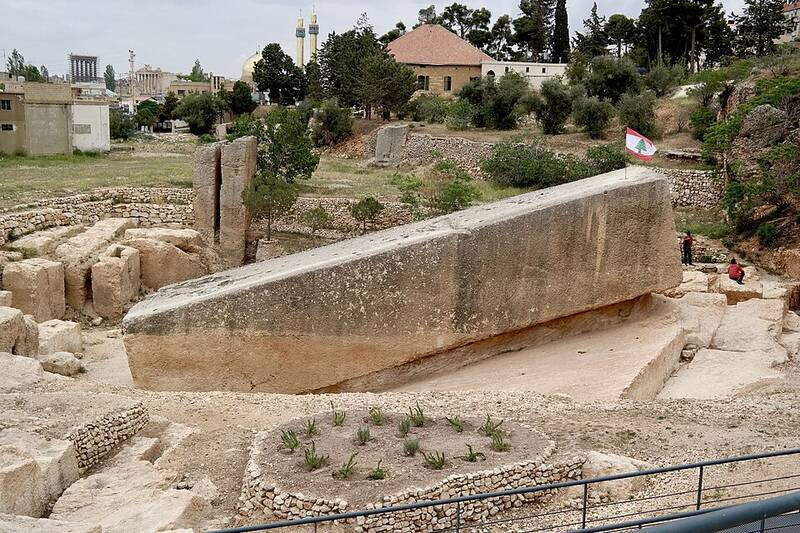

Baalbek trilithon
Beqaa Valley, Lebanon

The Roman Temple of Jupiter stands on a platform that includes the "Three Stones," each over 19 m long and weighing about 800 tonnes. Larger blocks lie in a nearby quarry, including the Stone of the Pregnant Woman, about 1,000 tonnes, and a block found in 2014, about 1,650 tonnes. Ancient astronaut writers cite Baalbek as too massive for ancient builders; the quarry sat slightly higher than the temple, so no lifting was required to move the stones. 1,2
Open in the interactive Watcher
Sources
- Baalbek Wikipedia
- Ancient astronauts Wikipedia